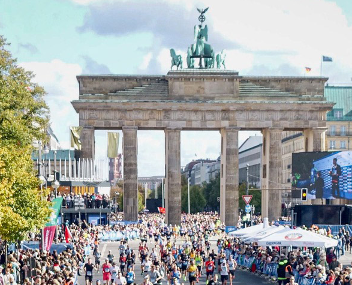

BERLIN

Meinen Erfahrungsbericht lesen
Berlin war mein erster Marathon. Zu diesem Zeitpunkt hatte ich kaum Erfahrung mit so langen Distanzen. Meine Vorbereitung war noch wenig strukturiert und eine durchdachte Ernährungs- und Verpflegungsstrategie hatte ich ebenfalls nicht.
Den Lauf zu Ende zu bringen, wurde deshalb zu einer großen körperlichen und mentalen Herausforderung. Trotz der Schmerzen und der anstrengenden Erholung danach war ich glücklich, es geschafft zu haben, und stolz auf meine erste Marathonmedaille.
Meine Erkenntnis: Ein Marathon ohne angemessene Vorbereitung wird schnell zur reinen Quälerei. Gleichzeitig zeigte mir das Erlebnis, dass ich auch eine sehr schwierige Herausforderung zu Ende bringen kann.